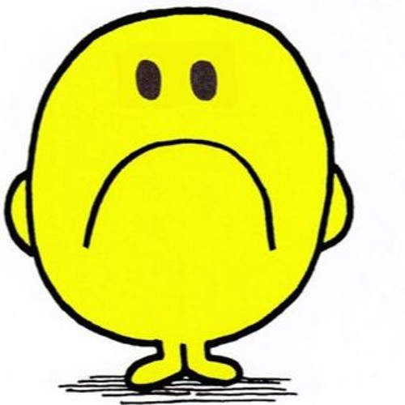
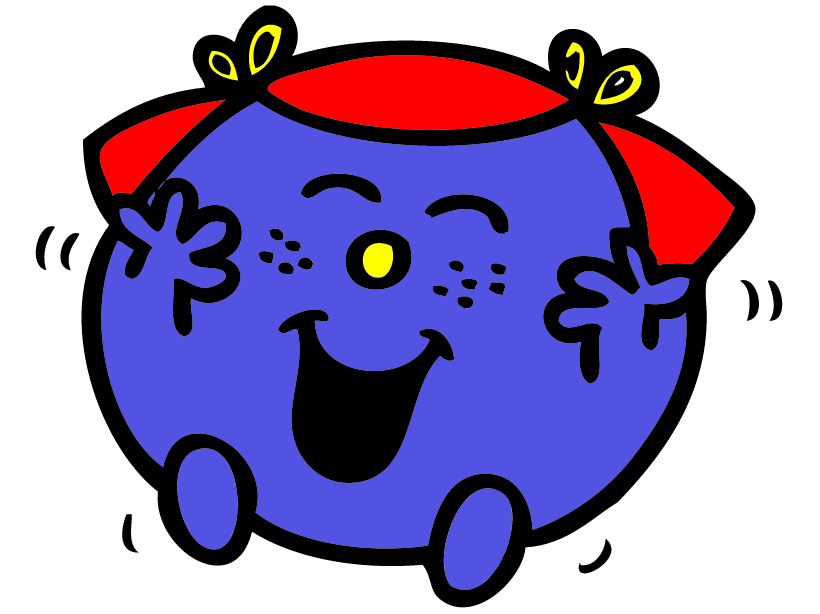

Toggle navigation
Bark
About us
Our Mission
Contact Us
About Us
We are Bark
We are a platform where you can log your emotions and track your feelings

Here, you can chart the ups and the downs, + track and identify the factors that influence your happiness

Your emotional journey starts here!